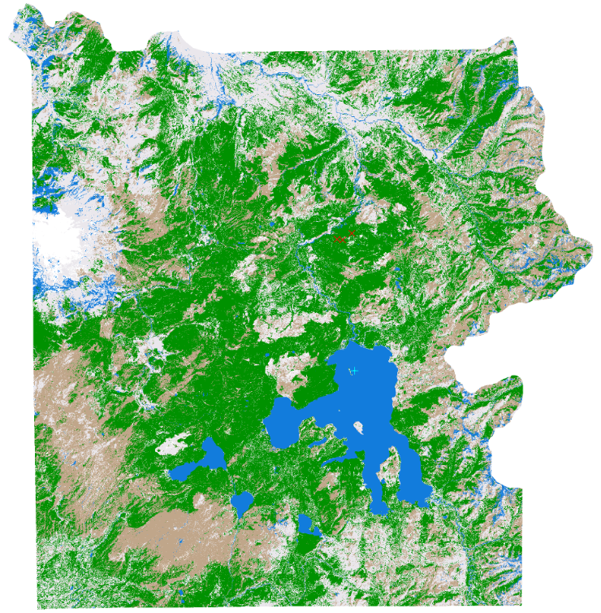

6 Satellite Image Classification 3 (QGIS)
6.1 Lab
6.1.1 Define Band Set for Image Classification
SCP (Semi-Automatic Classification Plugin,
 )을 클릭 후, 왼쪽 메뉴에서
)을 클릭 후, 왼쪽 메뉴에서 Band set을 선택.아이콘을 클릭하여 잘라낸 반사율 이미지(clipped reflectance images)를 Single band list에 추가.
버튼(
 ) 클릭하 우측에 있는 버튼 (
) 클릭하 우측에 있는 버튼 ( )을 클릭하여 QGIS에 로드 되어있는 반사율 이미지를 불러온다.
)을 클릭하여 QGIS에 로드 되어있는 반사율 이미지를 불러온다.

NOTE: 이때도 파일 순서를 오름차순으로 정렬할 것!
Band quick settings는 이전과 마찬가지로 Landsat 9 OLI [bands 1, 2, 3, 4, 5, 6, 7]으로 설정.
- 설정이 끝난 후,
RUN버튼을 누르지 말고, 좌측 하단에 있는 RGB 버튼( )을 클릭하여 QGIS의 Layers에 추가되도록 한다.
)을 클릭하여 QGIS의 Layers에 추가되도록 한다.

- 생성된
Virtual Band Set 3를 클릭한 다음, 상단 RGB = 의 값을 4-3-2로 설정 후, 나머지 클립된 이미지들 체크 해제.

선택한 밴드에 따라 지도에서 이미지 색상이 변하는 것을 아래와 같은 화면으로 확인할 수 있으며, 식생(vegetation)은 빨간색으로 강조되어 표시된다.

- Virtual Band Set 3를 사람 눈에 보이는 자연색(Natural Colors)으로 표시하려면, 다시 RGB 설정에서 밴드 3, 밴드 2, 밴드 1을 각각 (RGB = 3-2-1)로 설정. 이때,
- 파란색(Blue) 파장은 레이어 1,
- 녹색(Green) 파장은 레이어 2,
- 빨간색(Red) 파장은 레이어 3에 해당.

6.1.2 Image Classification
이미지 분류(Image Classification)는 원격 탐사(Remote Sensing) 분석에서 흔히 사용되는 방법이다. 이미지 분류의 목적은 이미지를 구성하는 픽셀을 각 픽셀이 나타내는 토지 피복 유형(land cover type)에 따라 지정된 그룹으로 구분하는 것이다. 이를 위해 분류기(classifier) 알고리즘을 적용하여 픽셀을 반사율(reflectance) 값에 따라 그룹화.
여기서 시도할 분류 방법은 지도 분류(supervised classification). 지도 분류는 분석가가 이미지에서 추출한 픽셀 샘플을 바탕으로 시스템에 분광(spectral) 클래스를 식별하도록 학습시키는 방식이다. 각 토지 피복 클래스마다 충분한 샘플이 사용되어야 하며, 각 클래스는 서로 분광적으로 구별 가능해야 한다. 즉, ‘숲’, ‘물’, ’도로’같은 클래스를 정했다면, 각 클래스를 대표하는 픽셀 샘플을 충분히 모아야 하며, 각 클래스의 픽셀이 특정 파장에서 반사하는 값(반사율, 여기서는 각 클래스 특징 색상)이 서로 달라야 한다.
샘플은 각 클래스의 대표 픽셀을 포함하는 폴리곤을 생성하여 만들고, 해당 픽셀의 정보를 서명(signature)으로 불러와 저장합니다. 예를 들어, ‘숲’ 지역을 식별하려면 이미지에서 숲으로 보이는 부분을 선택하여 폴리곤을 생성합니다. 폴리곤 내부의 픽셀들은 다양한 파장에서 측정된 반사값을 가지고 있으며, 이러한 값들의 조합을 통해 해당 클래스의 서명(signature)이 만들어진다. 모든 토지 피복 클래스에 대한 샘플링이 완료되면, 파장(wavelength) 대 반사율(reflectance) 그래프에서 서명을 관찰하여 클래스 간 분리 가능성(separability)을 평가한다. 평가 결과에 따라 샘플을 조정해야 할 수도 있다. 이미지 분류의 최종 결과는 각 클래스에 해당하는 코드가 부여된 단일 밴드 래스터(single band raster) 이미지이다.
6.1.2.1 Creating the Training Input
SCP를 실행하면 QGIS 인터페이스의 왼쪽 하단 부분에서 Semi-Automatic Classification Dock을 찾을 수 있다 (빨간 네모).

만약 보이지 않는다면, SCP 메인 툴바에서 Show Plugin(플러그인 표시) 메뉴를 클릭.

SCP dock의 왼쪽에는 세로로 정렬된 텍스트 탭 3개가 있다: Home, Training Input, 그리고 Classification.
- Training Input 클릭.

새로운 Training Input을 만들기 위해, 버튼(
 ) 클릭.
) 클릭.저장 위치는 이전과 동일한 위치로 설정. 여기서 파일명은 training.scp로 지정(파일명은 임의로 수정가능).

- 생성한 training.scp는 QGIS의 Layers에 나타난걸 볼 수 있다.

6.1.2.2 Create the Area of Interest (AOI)
이제, 각 클래스(Class)와 매크로클래스(Macro-class)를 정의하는 ROI(Region of Interest, 관심 영역)를 생성할 것이다. 각 ROI는 클래스 ID(CID)로 식별되며, 각 ROI는 매크로클래스 ID(MCID)를 통해 특정 토지 피복 클래스(land cover class)에 할당된다.
매크로클래스(Macro-class)는 비슷한 성질을 가진 여러 하위 클래스(클래스들)를 묶어놓은 큰 그룹.
예를 들어:
Macro-class ID (MCID): ‘산맥’
- Class 1 (CID 1): 나무
- Class 2 (CID 2): 그림자 진 숲
- Class 3 (CID 3): 협곡
위의 class 1~3은 모두 Macro-class 즉, 산맥이라는 큰 그룹안에 포함된다.
매크로클래스는 서로 다른 분광 서명(spectral signatures)을 가진 여러 재료(material)로 구성됩니다. 좋은 분류 결과를 얻기 위해서는 같은 매크로클래스에 속하더라도 서로 다른 재료의 분광 서명을 구분해야 합니다. 따라서, 각 매크로클래스마다 여러 개의 ROI를 생성할 것이며, 이때 동일한 MCID를 사용하되 각 관심 영역(AOI)마다 다른 CID를 부여하게 된다.
이번 실습에서는 아래와 같은 Macro-class ID를 사용한다.
| Macro-class name | Macroclass ID (MCID) |
|---|---|
| Vegetation | 1 |
| Bare Rock | 2 |
| Water | 3 |
| Snow | 4 |
| Cloud | 5 |
- ROI(관심 영역)는 다각형을 수동으로 그리거나 자동 영역 확장(region growing) 알고리즘을 사용하여 생성할 수 있다.
이미지의 왼쪽 하단에 있는 갈색 지역(노출된 암석 지대) 위로 지도를 확대 해보자.
이 영역 안에 ROI를 수동으로 생성하려면, QGIS 상단 작업 툴바(Working toolbar)에 있는 버튼( )을 클릭.
)을 클릭.
추가적으로 맵을 이동할 때는 QGIS 상단 툴바에서 아이콘(
)으로 전환해서 쉽게 이동가능.


해당 영역에서 마우스 왼쪽 클릭하여 ROI(관심 영역)의 꼭지점(vertex)을 정의하고, 마지막 꼭지점을 정의할 때는 마우스 오른쪽 클릭하여 폴리곤을 닫는다. 이미지 위에는 주황색 반투명 폴리곤이 표시되며, 이것은 임시 폴리곤(Training input에 저장되지 않은 상태). 의도한 영역을 잘 커버할 때까지 임시 폴리곤을 여러 번 그릴 수 있으며, 이전에 그린 폴리곤은 새로 그릴 때마다 덮어쓰기 가능.
임시 폴리곤의 모양이 만족스럽다면, 이를 Training input에 저장.
Training input 창을 열어 클래스(Class)와 매크로클래스(Macroclass)를 정의.
ROI Signature list에서 다음과 같이 설정한다 (MCID는 이전 테이블에서 참고):MC ID = 2
MC Info = Bare rock
C ID = 1
C Info = Rock

그런 다음, 오른쪽 하단에 있는 디스크 모양 버튼( )을 클릭하여 ROI를 Training input에 저장. 몇 초 후, ROI가 상단의 ROI Signature list에 나타나며, Signature옵션이 선택된 상태였다면 분광 서명(spectral signature)이 자동으로 계산된다.
)을 클릭하여 ROI를 Training input에 저장. 몇 초 후, ROI가 상단의 ROI Signature list에 나타나며, Signature옵션이 선택된 상태였다면 분광 서명(spectral signature)이 자동으로 계산된다.
저장된 ROI는 아래와 같이 검정색으로 변하고, CID를 보면, 자동으로 2로 설정된 것을 확인할 수 있다. MCID와는 다르게 CID는 자동으로 다음으로 숫자가 증가한다.

- 이제 자동 영역 확장(automatic region growing) 알고리즘을 사용하여 물(water) 클래스에 대한 두 번째 ROI를 생성 해보자. 이미지의 중간 하단 영역을 확대하고,
Working toolbar에서 Dist = 15로 설정.

자동 영역 확장은 다음 버튼( )을 통해 실행할 수 있다. 확장 버튼을 클릭한 후, 지도 중간 하단에 있는 검은색 호수를 클릭.
)을 통해 실행할 수 있다. 확장 버튼을 클릭한 후, 지도 중간 하단에 있는 검은색 호수를 클릭.

해당 영역은 자동으로 비슷한 픽셀 값을 가진 영역을 선택 해주기 때문에, 매번 클릭할 때마다 랜덤으로 생성된다.
ROI Signature list에서 다음과 같이 설정하고, 저장:
- MC ID = 3
- MC Info = Water
- C ID = 1
- C Info = Lake

각 Macro-class 별로 임의로 지정 해보자. 지정이 끝나면 아래와 같은 리스트를 얻게 된다.

6.1.2.3 Assess the Spectral Signatures
분광 서명(Spectral signatures)은 분류 알고리즘(Classification Algorithms)이 이미지 픽셀에 라벨을 지정할 때 사용된다. 그러나 서로 다른 재질(material)이라도 비슷한 분광 서명을 가질 수 있다(특히 다중분광 이미지(multispectral images)의 경우). 예를 들어, 도시 지역과 토양이 비슷한 분광 서명을 가질 수 있다.
분류에 사용되는 분광 서명이 너무 유사하면, 알고리즘이 이를 올바르게 구분하지 못해 픽셀이 잘못 분류(misclassified)될 수 있기 때문에, 분광 거리(Spectral Distance)를 평가하여 유사한 분광 서명을 찾아 제거하는 것이 필요하다. 물론, 거리(distance)의 개념은 사용하는 분류 알고리즘에 따라 달라질 수 있다.
- 분광 서명의 유사성을 간단히 평가하는 방법 중 하나는 Signature plot를 확인하는 것이다.
Signature plot을 보려면, ROI Signature list에서 두 개 이상의 분광 서명을 클릭해 선택한 후, 버튼( )을 클릭하면 된다.
)을 클릭하면 된다.

위에처럼 분광 서명을 클릭한 후,  클릭.
클릭.

그래프 내에서 이동하거나 확대/축소를 하여 서명들이 서로 유사한지(즉, 선이 매우 가깝게 위치하는지) 확인할 수 있다.
그래프에 표시된 선의 색상을 변경하려면, Plot Signature list에서 해당 색상을 더블 클릭하면 된다.
그래프에서 볼 수 있다시피, 분광 서명들이 서로 상당히 유사한 것을 알 수 있다. 이런 경우 분류가 잘 되지 않을 수 있다. (이상적인 분광서명 그래프는 아래와 같다.)

그래프에서 각 서명의 선은 ROI Signature list에서 정의된 색상으로 표시되며, 각 밴드(band)의 분광 범위(최소값과 최대값)는 해당 서명의 선 색상과 동일한 반투명 영역으로 나타난다. 이 반투명 영역이 클수록 표준편차(standard deviation)가 크다는 의미이며, 이는 해당 서명을 구성하는 픽셀들의 이질성(heterogeneity)이 높다는 것을 의미한다.
또한, 서로 유사한 분광 서명 간의 분광 유사도는 Plot Signature list에서 주황색으로 강조되어 표시되고, 서명 간의 Spectral distance를 계산할 수도 있다. 서명 간의 분광 거리를 계산하려면, Plot 테이블에서 두 개 이상의 분광 서명을 클릭하여 선택한다 .

위의 이미지는, 각 서명 쌍(pair of signatures)에 대해 거리가 계산된 결과이다. 이제 Spectral distances(분광 거리) 탭을 열어보면, 서명 간의 유사성이 선택한 알고리즘에 따라 다르게 나타나는 것을 확인할 수 있다.
예를 들어, 두 개의 서명이 Spectral Angle Mapping에서는 매우 유사하게 나타날 수 있다 (매우 낮은 분광 각도). 그러나 Maximum Likelihood(최대 우도법)에서는 두 서명이 상당히 멀리 떨어져 있을 수도 있다 (Jeffries-Matusita 거리 값이 2에 가까운 경우).
서명 간 유사성은 사용 가능한 분광 밴드의 수에 따라 재질(material) 간 유사성에 영향을 받으며, 또한 우리가 ROI를 생성하는 방식도 서명에 영향을 줍니다. 서명의 구체적인 값, 표준편차, ROI 픽셀 수 등과 같은 세부 정보는 Signature details 창에서 확인할 수 있다.

6.1.2.4 Create a Classification Preview
분류(classification) 과정은 수집한 ROI(관심 영역)와 해당 분광 서명(spectral signatures)에 기반한다.
최종 분류를 실행하기 전에, 분류 미리보기(Classification preview)를 생성해 결과를 평가하는 것이 유용하다. 이렇게 하면 분광 서명의 영향을 파악할 수 있으며, 결과가 좋지 않은 경우 더 많은 ROI를 수집해 토지 피복(land cover)을 보다 정확하게 분류할 수 있다.
분류(또는 미리보기)를 실행하기 전에, 분류 래스터(classification raster)에 표시될 각 토지 피복 클래스의 색상을 설정.
ROI Signature list에서 각 ROI의 Color 열을 더블 클릭해 각 클래스의 대표 색상을 선택.또한, Macroclasses 테이블에서도 매크로클래스의 색상을 설정 함. (각자 원하는 색상 지정)

분류 알고리즘을 선택. 이번 lab에서는 Maximum Likelihood(최대 우도법)을 사용.
SCP(
 )를 실행하여, Classification을 클릭. Input에서
)를 실행하여, Classification을 클릭. Input에서 Select input band Set은 현재 사용중인 band set과 동일하게 해야함. (왼쪽 Layers에 있는 band set 3와 우측 Input에 있는 band set 3로 통일)RUN은 아직 클릭하지 않는다.

Classification 창을 끈 다음, QGIS 상단 툴바에서 Classification preview( ) 의 Size = 300으로 설정하고, 분류 전에 결과를 미리 확인.
) 의 Size = 300으로 설정하고, 분류 전에 결과를 미리 확인.

Size = 300으로 설정한 후, 지도에서 한 지점을 클릭. 클릭하면, 클릭지점을 중심으로 정사각형 형태의 결과가 생성됨. 미리보기(preview)는 임시 래스터(temporary raster)로, QGIS를 종료하면 삭제되며, QGIS 패널의 Layers(레이어)에 scp_class_temp_group라는 그룹에 저장된다.

이제 Macro-class를 나타내는 5가지 색상만 표시되는 것을 확인할 수 있다. 일반적으로, ROI(관심 영역)나 분광 서명(spectral signature)을 ROI Signature list에 추가할 때마다 분류 미리보기(classification preview)를 수행하는 것이 추천된다.
따라서 ROI 생성(Create the ROIs) 단계와 분류 미리보기 생성(Create a Classification Preview) 단계는 반복적(iterative)이고 동시에 진행되는(concurrent) 과정이어야 함.
6.1.2.5 Create the Classification Output
분류 미리보기 결과가 만족스러웠다고 가정할 때(즉, 픽셀들이 ROI Signature list에 정의된 올바른 클래스에 할당된 경우), 이제 전체 이미지에 대한 실제 토지 피복 분류(land cover classification)를 수행 해보자.
다시 Classification(분류) 탭으로 돌아가서, Using training을 Macro-class ID (MCID)를 체크, Classification output항목에서 버튼( )을 클릭하여 분류 결과가 저장될 경로를 지정. 출력 파일은 래스터 파일(.tif) 형식으로 저장된다.
)을 클릭하여 분류 결과가 저장될 경로를 지정. 출력 파일은 래스터 파일(.tif) 형식으로 저장된다.

분류 결과는 다음과 같이 볼 수 있다.